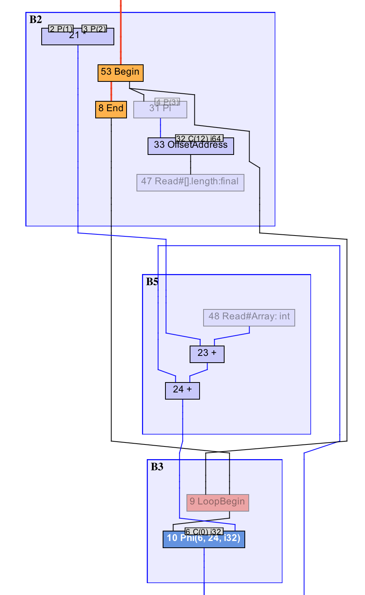

- 00 开篇词 为什么我们要学习Java虚拟机？.md.html
- 01 Java代码是怎么运行的？.md.html
- 02 Java的基本类型.md.html
- 03 Java虚拟机是如何加载Java类的.md.html
- 04 JVM是如何执行方法调用的？（上）.md.html
- 05 JVM是如何执行方法调用的？（下）.md.html
- 06 JVM是如何处理异常的？.md.html
- 07 JVM是如何实现反射的？.md.html
- 08 JVM是怎么实现invokedynamic的？（上）.md.html
- 09 JVM是怎么实现invokedynamic的？（下）.md.html
- 10 Java对象的内存布局.md.html
- 11 垃圾回收（上）.md.html
- 12 垃圾回收（下）.md.html
- 13 Java内存模型.md.html
- 14 Java虚拟机是怎么实现synchronized的？.md.html
- 15 Java语法糖与Java编译器.md.html
- 16 即时编译（上）.md.html
- 17 即时编译（下）.md.html
- 18 即时编译器的中间表达形式.md.html
- 19 Java字节码（基础篇）.md.html
- 20 方法内联（上）.md.html
- 21 方法内联（下）.md.html
- 22 HotSpot虚拟机的intrinsic.md.html
- 23 逃逸分析.md.html
- 24 字段访问相关优化.md.html
- 25 循环优化.md.html
- 26 向量化.md.html
- 27 注解处理器.md.html
- 28 基准测试框架JMH（上）.md.html
- 29 基准测试框架JMH（下）.md.html
- 30 Java虚拟机的监控及诊断工具（命令行篇）.md.html
- 31 Java虚拟机的监控及诊断工具（GUI篇）.md.html
- 32 JNI的运行机制.md.html
- 33 Java Agent与字节码注入.md.html
- 34 Graal：用Java编译Java.md.html
- 35 Truffle：语言实现框架.md.html
- 36 SubstrateVM：AOT编译框架.md.html
- 尾声丨道阻且长，努力加餐.html.md.html
- 工具篇 常用工具介绍.md.html
- 捐赠
25 循环优化
在许多应用程序中，循环都扮演着非常重要的角色。为了提升循环的运行效率，研发编译器的工程师提出了不少面向循环的编译优化方式，如循环无关代码外提，循环展开等。
今天，我们便来了解一下，Java 虚拟机中的即时编译器都应用了哪些面向循环的编译优化。
循环无关代码外提
所谓的循环无关代码（Loop-invariant Code），指的是循环中值不变的表达式。如果能够在不改变程序语义的情况下，将这些循环无关代码提出循环之外，那么程序便可以避免重复执行这些表达式，从而达到性能提升的效果。
int foo(int x, int y, int[] a) {
int sum = 0;
for (int i = 0; i < a.length; i++) {
sum += x * y + a[i];
}
return sum;
}
// 对应的字节码
int foo(int, int, int[]);
Code:
0: iconst_0
1: istore 4
3: iconst_0
4: istore 5
6: goto 25
// 循环体开始
9: iload 4 // load sum
11: iload_1 // load x
12: iload_2 // load y
13: imul // x*y
14: aload_3 // load a
15: iload 5 // load i
17: iaload // a[i]
18: iadd // x*y + a[i]
19: iadd // sum + (x*y + a[i])
20: istore 4 // sum = sum + (x*y + a[i])
22: iinc 5, 1 // i++
25: iload 5 // load i
27: aload_3 // load a
28: arraylength // a.length
29: if_icmplt 9 // i < a.length
// 循环体结束
32: iload 4
34: ireturn
举个例子，在上面这段代码中，循环体中的表达式x*y，以及循环判断条件中的a.length均属于循环不变代码。前者是一个整数乘法运算，而后者则是内存访问操作，读取数组对象a的长度。（数组的长度存放于数组对象的对象头中，可通过 arraylength 指令来访问。）
理想情况下，上面这段代码经过循环无关代码外提之后，等同于下面这一手工优化版本。
int fooManualOpt(int x, int y, int[] a) {
int sum = 0;
int t0 = x * y;
int t1 = a.length;
for (int i = 0; i < t1; i++) {
sum += t0 + a[i];
}
return sum;
}
我们可以看到，无论是乘法运算x*y，还是内存访问a.length，现在都在循环之前完成。原本循环中需要执行这两个表达式的地方，现在直接使用循环之前这两个表达式的执行结果。
在 Sea-of-Nodes IR 的帮助下，循环无关代码外提的实现并不复杂。

上图我截取了 Graal 为前面例子中的foo方法所生成的 IR 图（局部）。其中 B2 基本块位于循环之前，B3 基本块为循环头。
x*y所对应的 21 号乘法节点，以及a.length所对应的 47 号读取节点，均不依赖于循环体中生成的数据，而且都为浮动节点。节点调度算法会将它们放置于循环之前的 B2 基本块中，从而实现这些循环无关代码的外提。
0x02f0: mov edi,ebx // ebx 存放着 x*y 的结果
0x02f2: add edi,DWORD PTR [r8+r9*4+0x10]
// [r8+r9*4+0x10] 即 a[i]
// r8 指向 a，r9d 存放着 i
0x02f7: add eax,edi // eax 存放着 sum
0x02f9: inc r9d // i++
0x02fc: cmp r9d,r10d // i < a.length
// r10d 存放着 a.length
0x02ff: jl 0x02f0
上面这段机器码是foo方法的编译结果中的循环。这里面没有整数乘法指令，也没有读取数组长度的内存访问指令。它们的值已在循环之前计算好了，并且分别保存在寄存器ebx以及r10d之中。在循环之中，代码直接使用寄存器ebx以及r10d所保存的值，而不用在循环中反复计算。
从生成的机器码中可以看出，除了x*y和a.length的外提之外，即时编译器还外提了 int 数组加载指令iaload所暗含的 null 检测（null check）以及下标范围检测（range check）。
如果将iaload指令想象成一个接收数组对象以及下标作为参数，并且返回对应数组元素的方法，那么它的伪代码如下所示：
int iaload(int[] arrayRef, int index) {
if (arrayRef == null) { // null 检测
throw new NullPointerException();
}
if (index < 0 || index >= arrayRef.length) { // 下标范围检测
throw new ArrayIndexOutOfBoundsException();
}
return arrayRef[index];
}
foo方法中的 null 检测属于循环无关代码。这是因为它始终检测作为输入参数的 int 数组是否为 null，而这与第几次循环无关。
为了更好地阐述具体的优化，我精简了原来的例子，并将iaload展开，最终形成如下所示的代码。
int foo(int[] a) {
int sum = 0;
for (int i = 0; i < a.length; i++) {
if (a == null) { // null check
throw new NullPointerException();
}
if (i < 0 || i >= a.length) { // range check
throw new ArrayIndexOutOfBoundsException();
}
sum += a[i];
}
return sum;
}
在这段代码中，null 检测涉及了控制流依赖，因而无法通过 Sea-of-Nodes IR 转换以及节点调度来完成外提。
在 C2 中，null 检测的外提是通过额外的编译优化，也就是循环预测（Loop Prediction，对应虚拟机参数-XX:+UseLoopPredicate）来实现的。该优化的实际做法是在循环之前插入同样的检测代码，并在命中的时候进行去优化。这样一来，循环中的检测代码便会被归纳并消除掉。
int foo(int[] a) {
int sum = 0;
if (a == null) {
deoptimize(); // never returns
}
for (int i = 0; i < a.length; i++) {
if (a == null) { // now evluate to false
throw new NullPointerException();
}
if (i < 0 || i >= a.length) { // range check
throw new ArrayIndexOutOfBoundsException();
}
sum += a[i];
}
return sum;
}
除了 null 检测之外，其他循环无关检测都能够按照这种方式外提至循环之前。甚至是循环有关的下标范围检测，都能够借助循环预测来外提，只不过具体的转换要复杂一些。
之所以说下标范围检测是循环有关的，是因为在我们的例子中，该检测的主体是循环控制变量i（检测它是否在[0, a.length)之间），它的值将随着循环次数的增加而改变。
由于外提该下标范围检测之后，我们无法再引用到循环变量i，因此，即时编译器需要转换检测条件。具体的转换方式如下所示：
for (int i = INIT; i < LIMIT; i += STRIDE) {
if (i < 0 || i >= a.length) { // range check
throw new ArrayIndexOutOfBoundsException();
}
sum += a[i];
}
----------
// 经过下标范围检测外提之后：
if (INIT < 0 || IMAX >= a.length) {
// IMAX 是 i 所能达到的最大值，注意它不一定是 LIMIT-1
detopimize(); // never returns
}
for (int i = INIT; i < LIMIT; i += STRIDE) {
sum += a[i]; // 不包含下标范围检测
}
循环展开
另外一项非常重要的循环优化是循环展开（Loop Unrolling）。它指的是在循环体中重复多次循环迭代，并减少循环次数的编译优化。
int foo(int[] a) {
int sum = 0;
for (int i = 0; i < 64; i++) {
sum += (i % 2 == 0) ? a[i] : -a[i];
}
return sum;
}
举个例子，上面的代码经过一次循环展开之后将形成下面的代码：
int foo(int[] a) {
int sum = 0;
for (int i = 0; i < 64; i += 2) { // 注意这里的步数是 2
sum += (i % 2 == 0) ? a[i] : -a[i];
sum += ((i + 1) % 2 == 0) ? a[i + 1] : -a[i + 1];
}
return sum;
}
在 C2 中，只有计数循环（Counted Loop）才能被展开。所谓的计数循环需要满足如下四个条件。
- 维护一个循环计数器，并且基于计数器的循环出口只有一个（但可以有基于其他判断条件的出口）。
- 循环计数器的类型为 int、short 或者 char（即不能是 byte、long，更不能是 float 或者 double）。
- 每个迭代循环计数器的增量为常数。
- 循环计数器的上限（增量为正数）或下限（增量为负数）是循环无关的数值。
for (int i = START; i < LIMIT; i += STRIDE) { .. }
// 等价于
int i = START;
while (i < LIMIT) {
..
i += STRIDE;
}
在上面两种循环中，只要LIMIT是循环无关的数值，STRIDE是常数，而且循环中除了i < LIMIT之外没有其他基于循环变量i的循环出口，那么 C2 便会将该循环识别为计数循环。
循环展开的缺点显而易见：它可能会增加代码的冗余度，导致所生成机器码的长度大幅上涨。
不过，随着循环体的增大，优化机会也会不断增加。一旦循环展开能够触发进一步的优化，总体的代码复杂度也将降低。比如前面的例子经过循环展开之后便可以进一步优化为如下所示的代码：
int foo(int[] a) {
int sum = 0;
for (int i = 0; i < 64; i += 2) {
sum += a[i];
sum += -a[i + 1];
}
return sum;
}
循环展开有一种特殊情况，那便是完全展开（Full Unroll）。当循环的数目是固定值而且非常小时，即时编译器会将循环全部展开。此时，原本循环中的循环判断语句将不复存在，取而代之的是若干个顺序执行的循环体。
int foo(int[] a) {
int sum = 0;
for (int i = 0; i < 4; i++) {
sum += a[i];
}
return sum;
}
举个例子，上述代码将被完全展开为下述代码：
int foo(int[] a) {
int sum = 0;
sum += a[0];
sum += a[1];
sum += a[2];
sum += a[3];
return sum;
}
即时编译器会在循环体的大小与循环展开次数之间做出权衡。例如，对于仅迭代三次（或以下）的循环，即时编译器将进行完全展开；对于循环体 IR 节点数目超过阈值的循环，即时编译器则不会进行任何循环展开。
其他循环优化
除了循环无关代码外提以及循环展开之外，即时编译器还有两个比较重要的循环优化技术：循环判断外提（loop unswitching）以及循环剥离（loop peeling）。
循环判断外提指的是将循环中的 if 语句外提至循环之前，并且在该 if 语句的两个分支中分别放置一份循环代码。
int foo(int[] a) {
int sum = 0;
for (int i = 0; i < a.length; i++) {
if (a.length > 4) {
sum += a[i];
}
}
return sum;
}
举个例子，上面这段代码经过循环判断外提之后，将变成下面这段代码：
int foo(int[] a) {
int sum = 0;
if (a.length > 4) {
for (int i = 0; i < a.length; i++) {
sum += a[i];
}
} else {
for (int i = 0; i < a.length; i++) {
}
}
return sum;
}
// 进一步优化为：
int foo(int[] a) {
int sum = 0;
if (a.length > 4) {
for (int i = 0; i < a.length; i++) {
sum += a[i];
}
}
return sum;
}
循环判断外提与循环无关检测外提所针对的代码模式比较类似，都是循环中的 if 语句。不同的是，后者在检查失败时会抛出异常，中止当前的正常执行路径；而前者所针对的是更加常见的情况，即通过 if 语句的不同分支执行不同的代码逻辑。
循环剥离指的是将循环的前几个迭代或者后几个迭代剥离出循环的优化方式。一般来说，循环的前几个迭代或者后几个迭代都包含特殊处理。通过将这几个特殊的迭代剥离出去，可以使原本的循环体的规律性更加明显，从而触发进一步的优化。
int foo(int[] a) {
int j = 0;
int sum = 0;
for (int i = 0; i < a.length; i++) {
sum += a[j];
j = i;
}
return sum;
}
举个例子，上面这段代码剥离了第一个迭代后，将变成下面这段代码：
int foo(int[] a) {
int sum = 0;
if (0 < a.length) {
sum += a[0];
for (int i = 1; i < a.length; i++) {
sum += a[i - 1];
}
}
return sum;
}
总结与实践
今天我介绍了即时编译器所使用的循环优化。
循环无关代码外提将循环中值不变的表达式，或者循环无关检测外提至循环之前，以避免在循环中重复进行冗余计算。前者是通过 Sea-of-Nodes IR 以及节点调度来共同完成的，而后者则是通过一个独立优化 —— 循环预测来完成的。循环预测还可以外提循环有关的数组下标范围检测。
循环展开是一种在循环中重复多次迭代，并且相应地减少循环次数的优化方式。它是一种以空间换时间的优化方式，通过增大循环体来获取更多的优化机会。循环展开的特殊形式是完全展开，将原本的循环转换成若干个循环体的顺序执行。
此外，我还简单地介绍了另外两种循环优化方式：循环判断外提以及循环剥离。
今天的实践环节，我们来看这么一段代码：
void foo(byte[] dst, byte[] src) {
for (int i = 0; i < dst.length; i++) {
dst[i] = src[i];
}
}
上面这段代码经过循环展开变成下面这段代码。请问你能想到进一步优化的机会吗？
（提示：数组元素在内存中的分布是连续的。假设dst[0]位于 0x1000，那么dst[1]位于 0x1001。）
void foo(byte[] dst, byte[] src) {
for (int i = 0; i < dst.length - 4; i += 4) {
dst[i] = src[i];
dst[i + 1] = src[i + 1];
dst[i + 2] = src[i + 2];
dst[i + 3] = src[i + 3];
}
... // post-loop
}
© 2019 - 2023 Liangliang Lee. Powered by gin and hexo-theme-book.